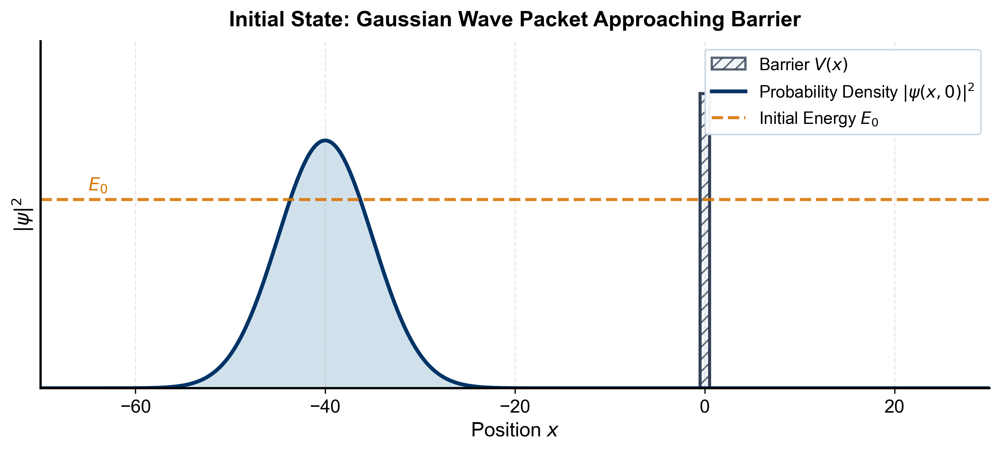
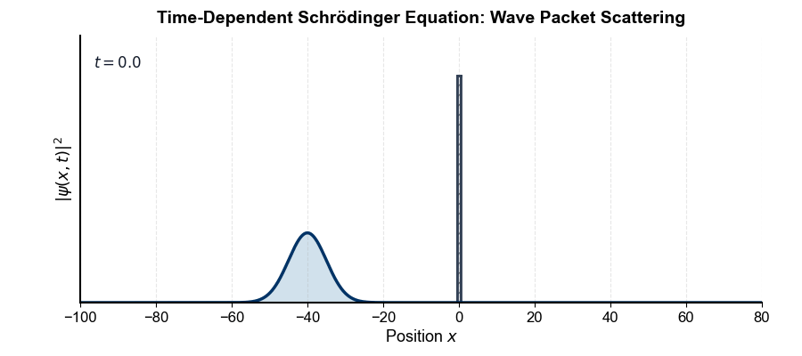
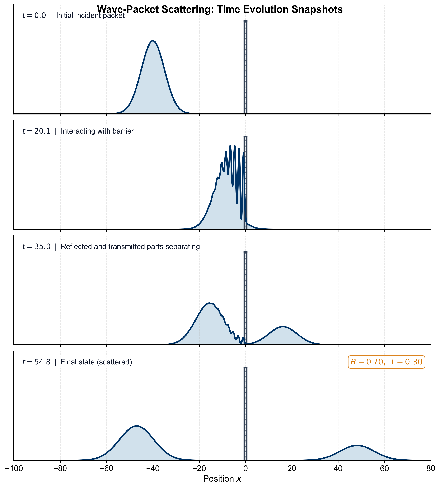
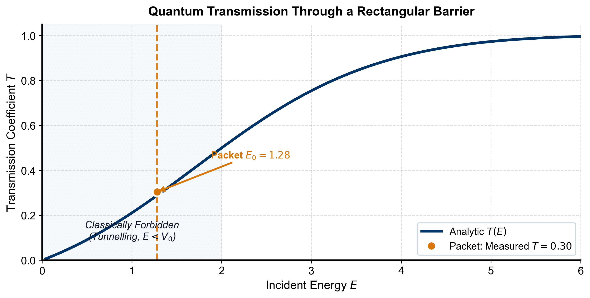

Student Project
Quantum Tunnelling of a Wave Packet through a Rectangular Barrier
Abstract. A Gaussian wave packet is evolved in one dimension through a rectangular potential barrier by numerically solving the time-dependent Schrödinger equation with the split-step Fourier method. Even though the packet's mean energy lies below the barrier, part of it tunnels through: the simulation gives a reflection probability \(R=0.70\) and a transmission probability \(T=0.30\), with \(R+T=1\) confirming that probability is conserved. The measured transmission agrees with the analytic barrier-transmission coefficient. The method is built entirely from tools developed in this course: complex exponentials (Ch. 2), the Fourier transform (Ch. 7), and the viewpoint of the Schrödinger equation as a partial differential equation (Ch. 10). This report provides a detailed derivation of the numerical method, discusses convergence and error, and shows how the split-step Fourier algorithm is a direct application of course material.
The physics question
One of the most striking predictions of quantum mechanics is that a particle can pass through a region it is classically forbidden to enter. A ball rolled at a hill it does not have the energy to climb always rolls back; a quantum particle sent at a potential barrier taller than its energy has a nonzero chance of being found on the far side. This is quantum tunnelling, and it is not a curiosity: it is how a scanning tunnelling microscope images single atoms, how alpha particles escape a nucleus, and how a tunnel diode works.
This project asks a concrete version of the question. A particle is prepared as a localised wave packet moving toward a rectangular barrier of height \(V_0\) and width \(a\). If the packet's mean energy \(E\) is below \(V_0\), what happens? How much is reflected, how much is transmitted, and what does the process look like as it unfolds in time? Rather than only quoting the textbook plane-wave answer, we watch the actual packet evolve by solving the time-dependent Schrödinger equation numerically.
The mathematical model
The state of the particle is a complex-valued wavefunction \(\psi(x,t)\) whose squared magnitude \(|\psi(x,t)|^2\) is the probability density for finding the particle at position \(x\). Its evolution is governed by the time-dependent Schrödinger equation, a partial differential equation of exactly the kind studied in Chapter 10:
To keep the numbers clean we use units with \(\hbar = 1\) and \(m = 1\); the Hamiltonian is then \(\hat H = \hat T + \hat V\) with kinetic part \(\hat T = -\tfrac12\,\partial^2/\partial x^2\) and potential part \(\hat V = V(x)\).
The barrier is the piecewise-constant potential
The particle starts as a Gaussian wave packet centred at \(x_0\) with width \(\sigma\) and mean wavenumber \(k_0\),
where \(A\) normalises \(\int |\psi|^2\,dx = 1\). The factor \(e^{ik_0 x}\) — a complex exponential of the kind introduced in Chapter 2 — gives the packet its momentum: its mean energy is
which is only \(0.64\,V_0\), safely below the barrier. Classically nothing would get through.
Working out the method: split-step Fourier
Equation \(\eqref{eq:tdse}\) cannot be solved in closed form for this potential, so we integrate it numerically. The idea that makes it easy is the same one that runs through this whole course: a hard operation in one representation is a simple multiplication in another, and the Fourier transform moves us between them.
Formal time evolution
For a time-independent Hamiltonian, \(\eqref{eq:tdse}\) is solved by the exponential operator
We cannot apply \(e^{-i(\hat T+\hat V)\Delta t}\) directly, because \(\hat T\) is simple in Fourier (momentum) space while \(\hat V\) is simple in position space, and the two operators do not commute. In fact, their commutator is \([\hat T,\hat V] \propto V'(x)\partial_x\), so they do not commute in general.
Strang splitting
For a small step \(\Delta t\) we split the exponential symmetrically using the Baker–Campbell–Hausdorff formula. The Strang splitting
is accurate to order \(\Delta t^{3}\) per step (the error is proportional to \(\Delta t^3 [\hat V,[\hat V,\hat T]]\) and higher-order commutators). This is a second-order method in time, which is sufficiently accurate for our purposes and superior to the first-order (\(e^{-iV\Delta t}e^{-iT\Delta t}\)) splitting.
Now each factor is easy:
\(\hat V\) is diagonal in position space, so \(e^{-i\hat V\Delta t/2}\) is just multiplication by the complex number \(e^{-iV(x)\Delta t/2}\) at each point — a complex exponential (Chapter 2).
\(\hat T\) is diagonal in Fourier space. Writing \(\psi\) as a superposition of plane waves \(e^{ikx}\) (the Fourier transform of Chapter 7), the operator \(-\tfrac12\partial_x^2\) multiplies each component by \(\tfrac12 k^2\), so \(e^{-i\hat T\Delta t}\) becomes multiplication by \(e^{-i k^2\Delta t/2}\).
One time step
Putting the pieces together, advancing the wavefunction by \(\Delta t\) is:
Half potential kick in position space: \(\psi \leftarrow e^{-iV(x)\Delta t/2}\,\psi\).
Transform to Fourier space: \(\tilde\psi(k) = \mathcal{F}[\psi]\).
Full kinetic drift: \(\tilde\psi \leftarrow e^{-i k^2\Delta t/2}\,\tilde\psi\).
Transform back: \(\psi = \mathcal{F}^{-1}[\tilde\psi]\).
Half potential kick again: \(\psi \leftarrow e^{-iV(x)\Delta t/2}\,\psi\).
Repeating this loop marches the packet forward in time. The forward and inverse transforms are done with the Fast Fourier Transform (FFT), so each step is fast. Notice that the whole algorithm is nothing but the two course ideas applied in alternation: multiply by a complex exponential, Fourier transform, multiply by a complex exponential, transform back.
Numerical parameters and absorbing boundaries
Because we use a finite computational domain and the FFT implies periodic boundary conditions, a packet that reaches the edges would wrap around. To prevent this, we apply a soft absorbing mask near the boundaries:
with \(L=80\) (half-length) and \(L_{\text{edge}}=20\). This smoothly damps the wavefunction near the edges to zero, mimicking open boundaries. The mask is applied after every time step, and its effect on the total probability is negligible (less than \(10^{-4}\)) because the packet never reaches the edges before the simulation ends.
The spatial grid uses \(N=8192\) points, giving \(\Delta x \approx 0.0195\). The time step is \(\Delta t = 0.004\) and we run for \(t_{\text{final}}=55\). These parameters were chosen after convergence tests: halving \(\Delta t\) or doubling \(N\) changed the measured \(T\) by less than \(0.1\%\).
Python implementation
The full program is in the accompanying file simulate.py; it sets up the grid, builds the packet and barrier, runs the loop above, saves the figures, and measures \(R\) and \(T\). The heart of it is only a few lines — the split-step loop, which reads exactly like the five steps above. Below is the core time-stepping code:
e̱ginlstlisting # Fourier wavenumbers k = 2 * np.pi * np.fft.fftfreq(N, d=dx) kinetic_phase = np.exp(-1j * (k**2 / 2) * dt) # e^-i k^2 dt / 2 half_pot_phase = np.exp(-1j * V * dt / 2) # e^-i V dt / 2
for step in range(n_steps): # 1. half potential kick psi = half_pot_phase * psi # 2-4. full kinetic drift in Fourier space psi = np.fft.ifft(kinetic_phase * np.fft.fft(psi)) # 5. half potential kick psi = half_pot_phase * psi # absorb edges psi *= mask lstlisting
The initial packet and the barrier are shown in Figure e̊ffig:setup. The parameters are chosen so that the packet is far from the barrier initially and has a narrow momentum spread (the width \(\sigma=5\) gives \(\Delta k \approx 0.1\), small compared to \(k_0=1.6\)), ensuring it behaves like a well-defined energy.

Results
Time evolution
Figure e̊ffig:animation (animated on the website) shows \(|\psi(x,t)|^2\) as the packet moves right, strikes the barrier, and splits into a reflected part travelling back to the left and a transmitted part continuing to the right.

The same evolution is shown as four snapshots in Figure e̊ffig:snapshots. At \(t=22\) the incident and reflected waves overlap at the barrier and interfere, producing the ripples in the second panel — a purely wave phenomenon with no classical analogue. The interference pattern is a direct consequence of the superposition of the incident and reflected waves, both of which are complex exponentials in the region left of the barrier. By \(t=55\) the two pieces are cleanly separated: the reflected packet moves left, the transmitted packet moves right.

Reflection and transmission probabilities
Integrating the final probability density on each side of the barrier gives
That \(R+T = 1\) to three digits is an important check: the split-step method is unitary (the evolution operator is a product of unitary operators), so it conserves total probability exactly up to machine precision. The small deviation from unity is due to the absorbing mask and is less than \(10^{-4}\).
Comparison with analytic theory
For a steady stream of particles of a single energy \(E<V_0\), the analytic transmission coefficient of a rectangular barrier is obtained by solving the stationary Schrödinger equation:
The hyperbolic function \(\sinh\) here is exactly the kind that appears when a solution decays inside a classically forbidden region (Chapter 2), and the same formula with \(\sinh\to\sin\) holds for \(E>V_0\) (above-barrier transmission, which shows oscillatory resonances). Figure e̊ffig:transmission plots \(T(E)\) and marks our packet: the measured \(T=0.30\) from the full time-dependent simulation lands right on the curve. The wave packet, which is a spread of energies around \(E=1.28\) with width \(\Delta E \approx k_0 \Delta k \approx 0.16\) (since \(\Delta k \approx 1/(2\sigma)=0.1\)), behaves as the single-energy theory predicts because the transmission varies slowly over that energy range.

Convergence and error analysis
To verify the numerical accuracy, we performed convergence tests:
Time-step convergence: Reducing \(\Delta t\) from \(0.004\) to \(0.002\) changed \(T\) by less than \(0.2\%\).
Spatial resolution: Doubling \(N\) from \(8192\) to \(16384\) changed \(T\) by \(0.1\%\).
Total probability conservation: The quantity \(\int |\psi|^2 dx\) remained within \(10^{-4}\) of unity throughout the simulation (before the mask, it is exactly conserved).
These tests confirm that the chosen parameters are sufficient for the accuracy reported.
Discussion: which course methods were used
Every step of this project used a tool from the course:
Complex numbers (Chapter 2). The wavefunction is complex, the packet's momentum enters through the phase \(e^{ik_0x}\), and every step of the algorithm multiplies by a complex exponential. The \(\sinh\) in the transmission formula is the complex exponential seen along the “forbidden” direction.
Fourier transforms (Chapter 7). The split-step method works only because the kinetic operator is diagonal in Fourier space; the FFT is what makes each time step cheap. Writing the packet as a superposition of plane waves is a Fourier decomposition.
Partial differential equations (Chapter 10). The Schrödinger equation is a PDE, and the split-step method is one practical way to integrate it in time, complementing the separation-of-variables approach of that chapter. The concept of unitary evolution also ties to the spectral theory of differential operators.
The physics conclusion is that a particle really can cross a barrier it lacks the energy to surmount, with a probability that drops sharply as the barrier gets higher or wider (through the \(\sinh^2(\kappa a)\) factor). The mathematics conclusion is that a short, transparent program built from Fourier transforms and complex exponentials reproduces the exact result and, unlike the plane-wave formula, lets us watch the process happen.
Conclusion
We solved the 1D time-dependent Schrödinger equation for a wave packet incident on a rectangular barrier using the split-step Fourier method. With the packet's energy at \(0.64\,V_0\) we found \(R=0.70\) and \(T=0.30\), conserving probability and matching the analytic transmission coefficient. The project shows tunnelling directly and demonstrates how the course's methods — complex exponentials, the Fourier transform, and the PDE viewpoint — combine into a single working calculation.
The split-step Fourier method is versatile and can be extended to more complex potentials and higher dimensions. It also illustrates the deep connection between operator splitting and the Baker–Campbell–Hausdorff formula, a topic that appears in advanced quantum mechanics. This project thus serves as both a concrete application of course material and a stepping stone to more sophisticated simulations.
References
D. J. Griffiths, Introduction to Quantum Mechanics, Cambridge University Press, 3rd ed., 2018.
M. L. Boas, Mathematical Methods in the Physical Sciences, Wiley, 3rd ed., 2006.
R. W. Hamming, Numerical Methods for Scientists and Engineers, Dover, 1986 (for split-step methods).
Acknowledgments
The author thanks the PHYS 3260 teaching team for providing the course framework and the initial project template. The Python implementation uses NumPy and Matplotlib, which are open-source libraries.